.TRAVEL.
Welcome to Japan
travelmore

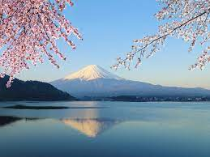

Mount Fuji
Mount Fuji is an iconic mountain located in Japan and is the highest peak in the country, standing at 3,776 meters (12,388 feet). It is a popular destination for travelers from around the world who come to admire its natural beauty, climb to its summit, and experience Japan's rich culture and history. The mountain is located in the Fuji-Hakone-Izu National Park, which spans across several prefectures including Shizuoka, Yamanashi, and Kanagawa. Visitors can access the mountain from several nearby cities such as Tokyo and Yokohama, making it an ideal destination for a day trip or a longer stay. Climbing Mount Fuji is a popular activity among travelers, with the official climbing season running from July to August. The climb is considered challenging but is accessible to most people, and there are several trails to choose from that vary in difficulty. The summit provides stunning views of the surrounding landscape, including nearby lakes and forests, and offers a unique perspective on Japanese culture and history. In addition to climbing, visitors can also enjoy other activities such as hiking, hot springs, and cultural experiences such as tea ceremonies and traditional Japanese cuisine. The nearby cities and towns offer a range of accommodations, from traditional Japanese inns to modern hotels, making it easy for travelers to plan their visit. Overall, Mount Fuji is a must-visit destination for travelers who want to experience the natural beauty, culture, and history of Japan. Its stunning landscape and unique cultural significance make it an unforgettable experience for anyone who visits..
CAFES
Blue Bottle Coffee Japan
In various locations in Tokyo and Kyoto, this cafe is known for its high-quality coffee and minimalist decor. Here is the location of the Tokyo shop on Google Maps
Cafe de L'ambre: Located in Tokyo's Ginza district, this cafe has been serving coffee for over 60 years and is known for its retro decor and strong, flavorful coffee. Here is the location on Google Maps:
: Located in Tokyo's Ginza district, this cafe has been serving coffee for over 60 years and is known for its retro decor and strong, flavorful coffee. Here is the location on Google Maps:
Located in Tokyo's Ginza district, this cafe has been serving coffee for over 60 years and is known for its retro decor and strong, flavorful coffee. Here is the location on Google Maps:
My photos from Japan
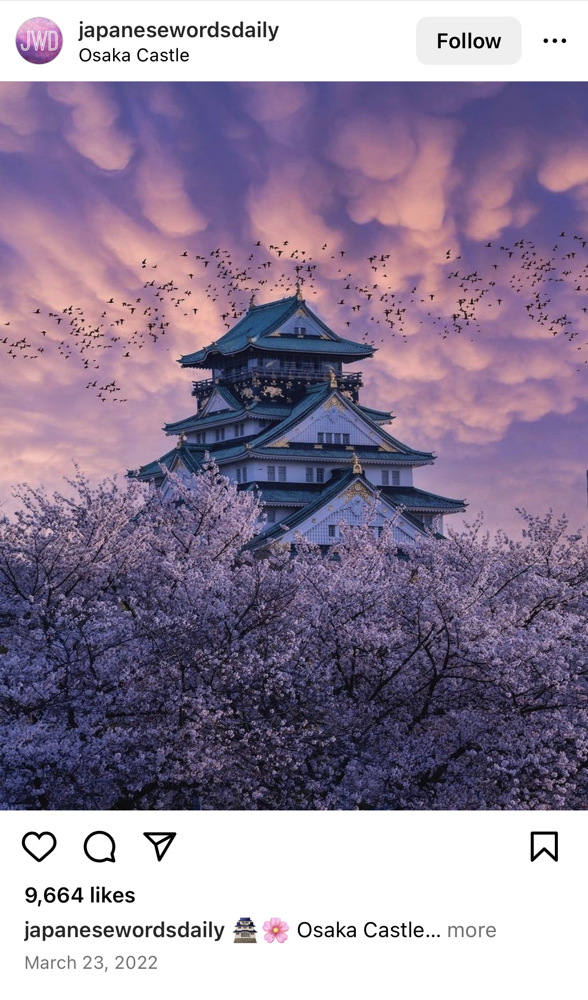
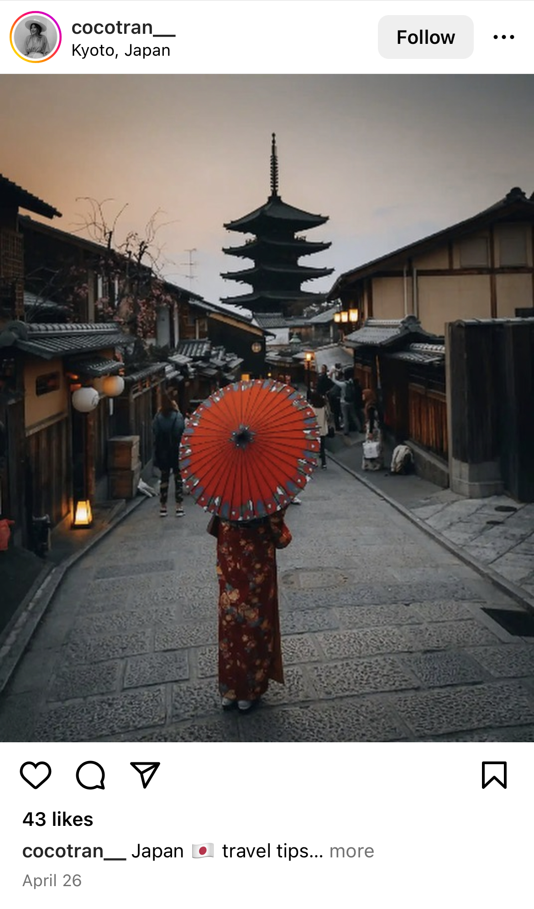
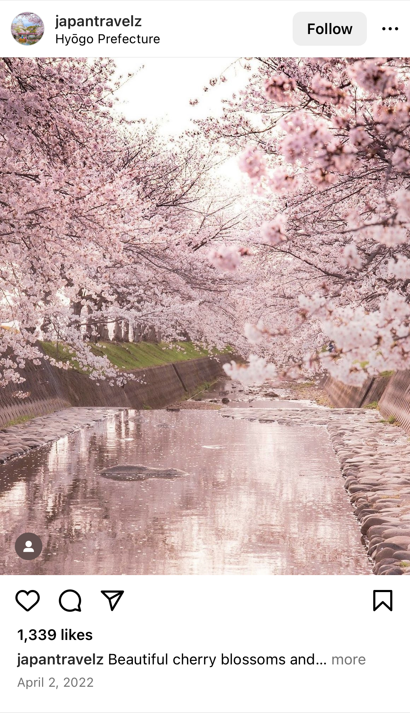
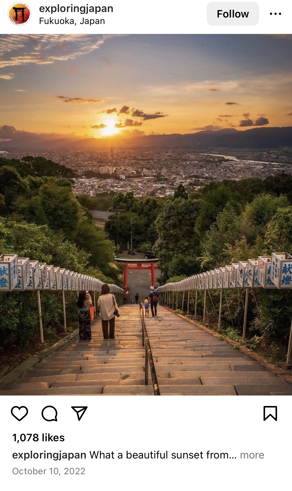
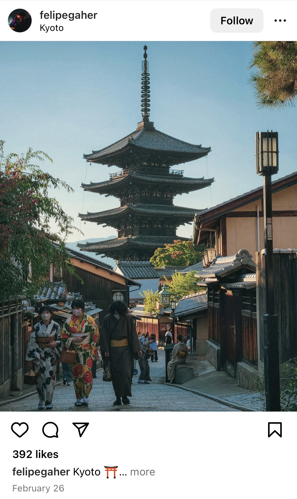
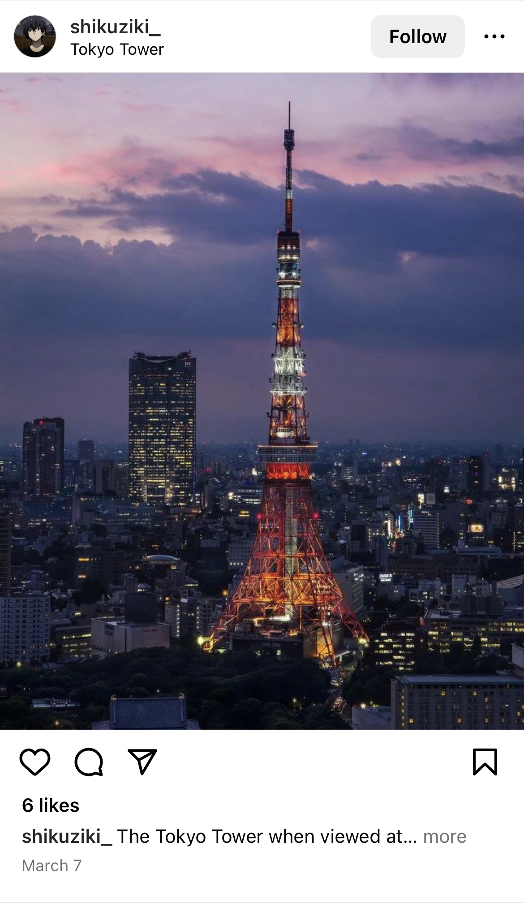
Blue Bottle Coffee Japan
In various locations in Tokyo and Kyoto, this cafe is known for its high-quality coffee and minimalist decor. Here is the location of the Tokyo shop on Google Maps
Cafe de L'ambre: Located in Tokyo's Ginza district, this cafe has been serving coffee for over 60 years and is known for its retro decor and strong, flavorful coffee. Here is the location on Google Maps: : Located in Tokyo's Ginza district, this cafe has been serving coffee for over 60 years and is known for its retro decor and strong, flavorful coffee. Here is the location on Google Maps:
Located in Tokyo's Ginza district, this cafe has been serving coffee for over 60 years and is known for its retro decor and strong, flavorful coffee. Here is the location on Google Maps:
My photos from Japan
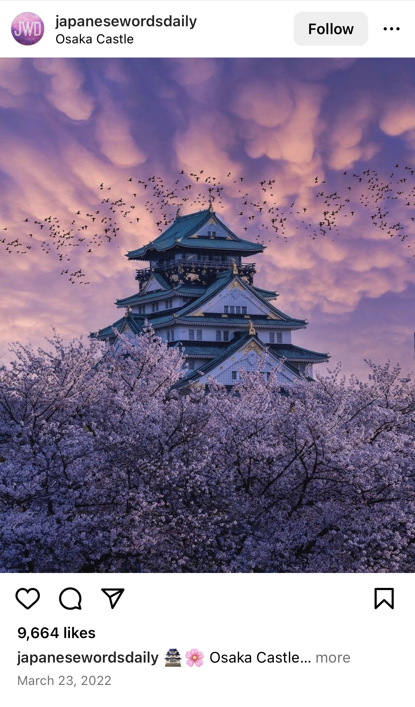
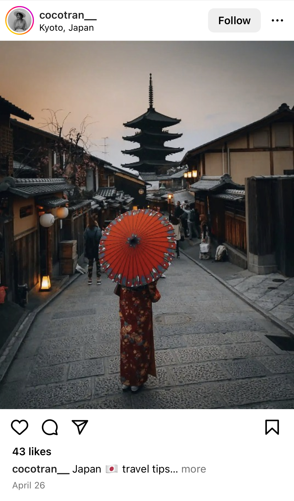
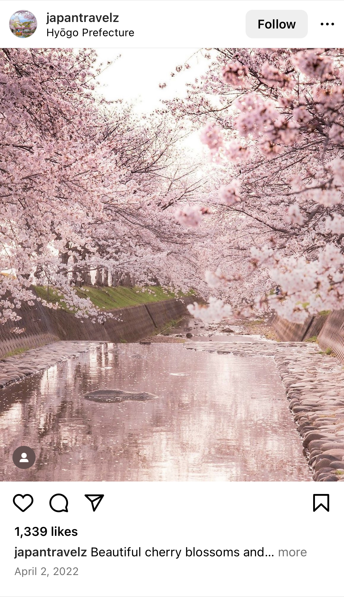
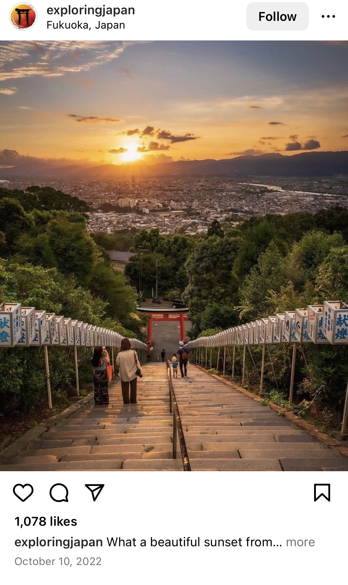
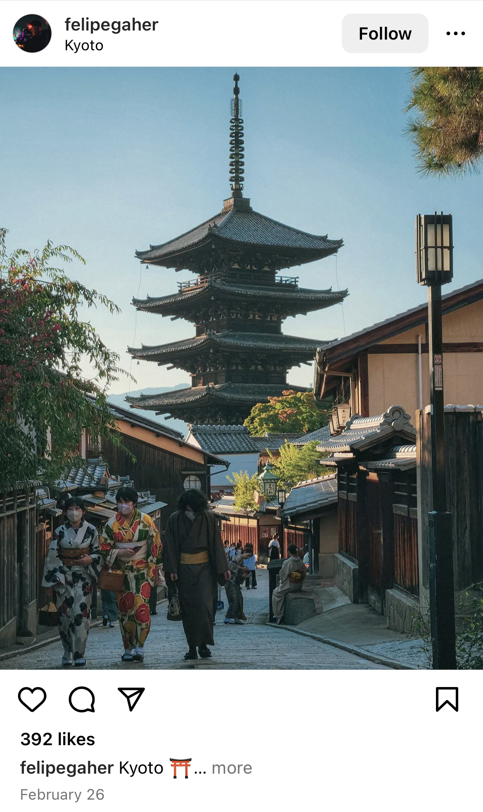
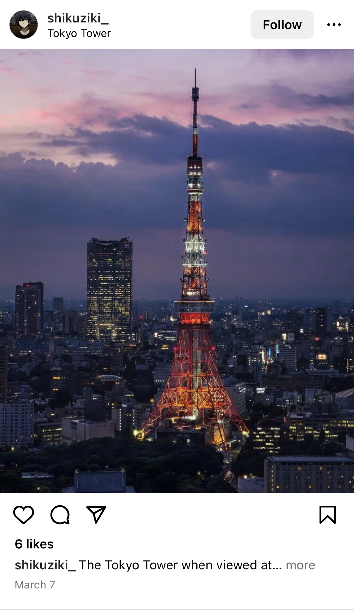